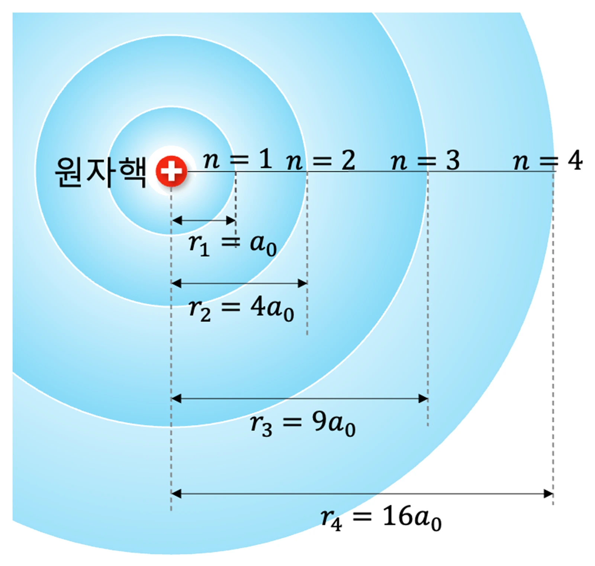

고3 전자기와 양자 · Ⅲ 양자와 미시세계 · 웹툰 16화 「흐릿한 전자 구름」
실험에서 수소 원자 속 전자의 위치를 1s·2s·2p 상태에서 30~3000번 ‘측정’해 점으로 찍고, 보어 모형과 양자 모형의 거리 분포를 비교했습니다. 보어 모형은 모든 점이 반지름 n²a₀인 원 위에 놓였지만, 양자 모형은 점이 구름처럼 퍼져 평균 거리가 1s 1.5a₀, 2s 6a₀, 2p 5a₀에 가까워졌고 보어 궤도 ±10 % 안에 든 점은 10~16 %뿐이었습니다. 불확정성 원리와 현대 원자 모형을 정리합니다.
실험 데이터 되짚기
실험 안내: 상태(1s·2s·2p), 모형(보어·양자), 측정 횟수(30·300·3000번)를 고른 뒤 위치 측정하기를 누르면 평균 거리, 퍼짐 Δr, 보어 궤도 근처 비율이 기록됩니다. 양자 모형의 점은 파동 함수의 확률 분포에서 무작위로 뽑은 모의 측정이라 실행마다 조금씩 다릅니다. 같은 상태를 두 모형으로 한 번씩, 세 상태를 모두 기록해 4개 이상이 되면 데이터 검증 탭이 열립니다.
| 상태 · 모형 | 평균 r (a₀) | Δr (a₀) | 보어 궤도 ±10 % 안 | 양자 이론 ⟨r⟩ · Δr · 궤도 근처 |
|---|---|---|---|---|
| 1s · 보어 | 1.00 | 0.00 | 100 % | — |
| 1s · 양자 | 1.50 | 0.86 | 11 % | 1.5 · 0.87 · 10.8 % |
| 2s · 보어 | 4.00 | 0.00 | 100 % | — |
| 2s · 양자 | 6.02 | 2.44 | 12 % | 6 · 2.45 · 11.6 % |
| 2p · 양자 | 5.01 | 2.23 | 16 % | 5 · 2.24 · 15.5 % |
보어 모형은 Δr = 0으로 위치를 정확히 정하고 속력까지 정해 버려 불확정성 원리 Δx·Δp ≥ ħ/2에 어긋납니다. 양자 모형은 전자를 확률 분포로 나타내며, 1s에서 가장 확률이 큰 거리는 a₀로 보어 반지름과 같지만 평균은 1.5a₀이고 보어 궤도 근처에 있는 점은 약 11 %뿐입니다.
하이젠베르크 불확정성 원리 Δx·Δp ≥ ħ/2 때문에 전자의 위치와 운동량을 동시에 정확히 정할 수 없습니다. 보어 모형처럼 "반지름 r인 원 궤도를 속력 v로 돈다"는 그림은 둘 다 정확히 정해 버리므로 성립할 수 없어요.
교재 그림
보어 모형의 궤도 반지름 — r = n²a₀

보어 모형은 전자가 이 원 위에만 있다고 봅니다(Δr = 0). 아래 실험에서 1s 확률 구름의 가장 진한 거리 a₀, 2p의 가장 진한 거리 4a₀가 이 궤도 반지름과 같은지, 그런데 점이 얼마나 퍼져 있는지 비교해 보세요.
움직여 보기
전자 위치를 3 000번 찍으면 — 보어 궤도 vs 확률 구름
1s는 가장 확률이 큰 거리가 a₀(보어 반지름, 주황 점선)이지만 평균은 1.5a₀, 궤도 근처(±10 %)에 찍히는 점은 약 11 %뿐입니다(이론 Δr 0.87a₀). 2s는 2a₀에 마디(점이 없는 고리), 2p는 한 축 방향 아령 모양입니다. 보어 모형은 Δr = 0이라 불확정성 원리에 어긋납니다. 3차원 분포를 한 평면에 비춘 모의 측정이며, 오른쪽 검은 곡선은 이론 P(r) = r²|R(r)|²입니다.
· 실제로 원자 속 전자 위치를 한 번에 하나씩 찍는 실험은 매우 어렵습니다. 이 실험은 확률 분포의 의미를 보여 주는 모의 측정입니다.
· 점 구름은 3차원 분포를 한 평면에 투영한 것입니다.
a₀ ≈ 0.0529 nm (보어 반지름) · ⟨r⟩: 1s 1.5a₀, 2s 6a₀, 2p 5a₀ · 가장 확률 큰 거리: 1s a₀, 2p 4a₀ · 2s 마디 r = 2a₀
dP/dr ∝ (2r − 2r²/a₀)e^(−2r/a₀) = 0 → r = a₀(≈ 0.0529 nm). 보어 반지름과 같지만, 전자가 그 거리에만 있는 것이 아니라 그 근처가 가장 확률이 높다는 뜻입니다.
1.5 × 0.0529 = 약 0.079 nm. 보어 모형은 언제나 정확히 a₀ = 0.0529 nm입니다. 양자 모형은 거리가 Δr ≈ 0.87a₀만큼 퍼져 있고, 가끔은 3a₀ 넘게 떨어진 곳에서도 발견됩니다.